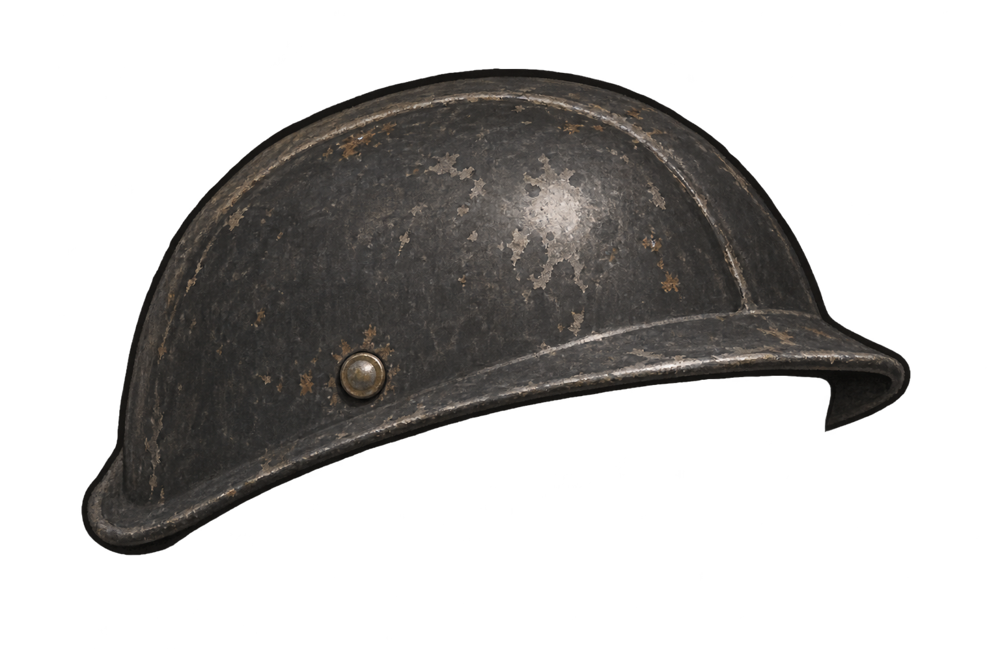
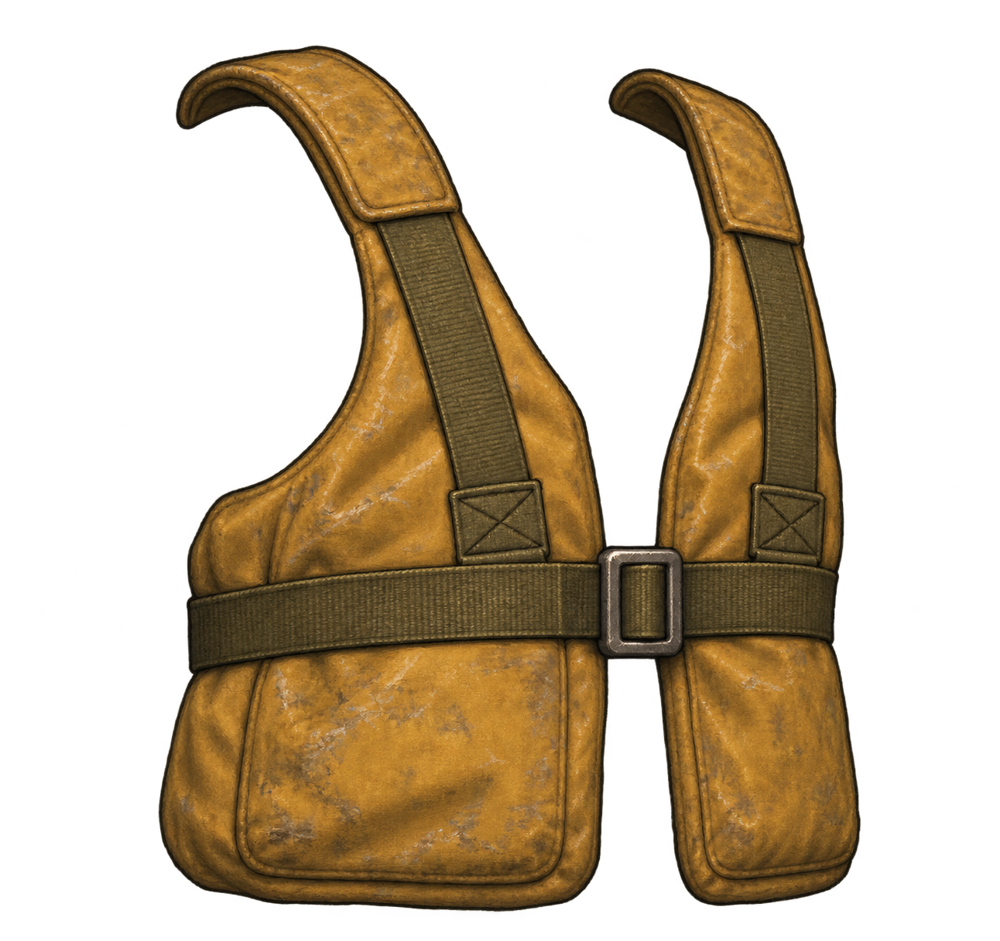
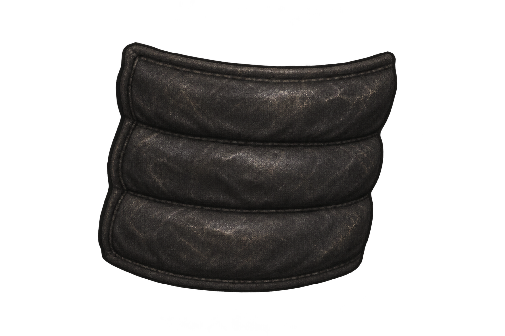
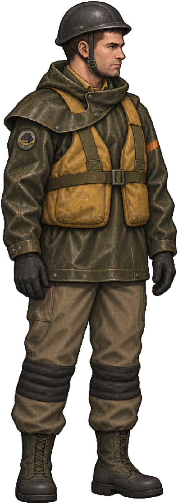

Coque du casque de pont
1 536 × 1 024 · PNG RGBA
La coque visible est séparée. La jugulaire masquée par le visage reste exclue.
Trois accessoires du costume original du Scout Diamond Dogs, chacun dans son propre PNG transparent.

1 536 × 1 024 · PNG RGBA
La coque visible est séparée. La jugulaire masquée par le visage reste exclue.

1 292 × 1 217 · PNG RGBA
Deux panneaux reliés par les sangles d’origine. La façade forme un seul élément.

1 536 × 1 024 · PNG RGBA
Les trois bourrelets visibles sont réunis ; aucune jambe ni sangle arrière n’est ajoutée.

La pose d’origine est conservée à l’identique. Les pièces reprennent son orientation, ses matières et ses couleurs.
État : dessins sources de revue. Ces accessoires accompagnent un costume original CQC. Les attaches, les occlusions et les placements par pose restent à calibrer avant le combat.
Les trois PNG sont les sorties brutes de génération, avec leur canal alpha. La copie de référence ne compte pas comme une nouvelle image.
Les redessins ne sont pas une extraction pixel pour pixel. Le quadrillage aide à examiner les contours et les pixels de faible alpha.